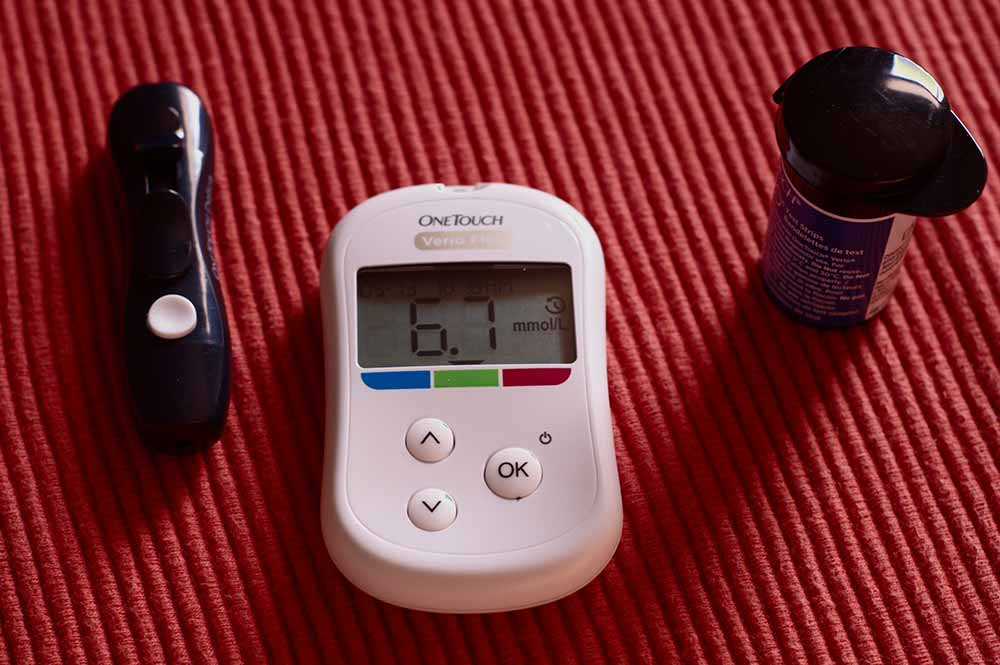
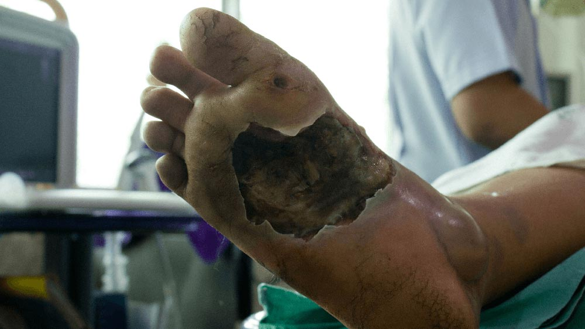

Jedyną przyczyną cukrzycy jest brak potasu w organizmie! Ustabilizuj poziom cukru we krwi i pozbądź się objawów cukrzycy tanim sposobem, nie pozwalając, by choroba Cię zabiła – to jest możliwe!
Glukometr // Kate Redfern
Cukrzyca nieuchronnie prowadzi do uszkodzenia narządów wewnętrznych i powolnej, bolesnej śmierci. Aż 78% diabetyków umiera z powodu powikłań choroby.
O. Czerwińska: „Osobiście upewnię się, czy każda osoba, która złożyła wniosek na dofinansowanie produktu do stabilizacji cukru we krwi, otrzymała go w obniżonej cenie”.
Na pytania odpowiada:
Olga Czerwińska
Kierownik Instytutu Badawczego Endokrynologii. Najlepsza specjalistka z zakresu diabetologii, która uratowała miliony istnień!
Praktyka lekarska: ponad 30 lat
„Możesz zahamować cukrzycę i ustabilizować cukier raz na zawsze w każdym wieku i na każdym etapie choroby – zapamiętaj to i nikogo nie słuchaj”.
Ruszył program, w ramach którego każdy może otrzymać środek na cukrzycę z dofinansowaniem!
Miesiąc temu wystartował program „Polska cukrzykom”, którego celem jest walka z cukrzycą i jej powikłaniami. Otrzymaliśmy wiele pytań dotyczących jego realizacji i dzisiaj publikujemy wywiad z koordynatorką programu Olgą Czerwińską. Uznana specjalistka kieruje programem i osobiście nadzoruje jego działania w celu uniknięcia korupcji. Przypomnijmy, że program został oficjalnie uruchomiony . W ramach, którego każdy mieszkaniec kraju może otrzymać najnowszy produkt na cukrzycę z dofinansowaniem!
Korespondent: Witam Pani Olgo, dlaczego konieczne stało się uruchomienie programu finansowanego z budżetu państwa? Zwykłe kliniki i szpitale nie radzą sobie z leczeniem diabetyków?
O. Czerwińska: - Dzień dobry. Faktem jest, że system opieki zdrowotnej jest bardzo zbiurokratyzowany. Jest to duży, masywny mechanizm, który nie działa tak jak powinien. Oczywiście cały czas leczy się diabetyków w klinikach i szpitalach. Niestety specjaliści koncentrują się głównie na utrzymaniu organizmu w mniej sprawnym stanie i zwalczaniu skutków choroby. Należy zrozumieć, że specjalistyczne diety, insulina i leki wspomagające tworzą tylko iluzję normalnego życia. Nie wpływa to w żaden sposób na samą chorobę. Cukrzyca stopniowo zabija.
W rezultacie okazuje się, że miliony chorych nie otrzymują odpowiedniego leczenia i pomocy. Dzieje się tak pomimo faktu, że cukrzyca jest chorobą, na którą umiera ten sam odsetek ludzi, co na nowotwory złośliwe.
Martwicze zapalenie powięzi // William Mactravish
W jakim sensie? Chce Pani powiedzieć, że należy porównać poziom ryzyka raka i cukrzycy?
- Nie tylko należy je porównać, są one zasadniczo bardzo podobne, jeśli patrzeć na procent śmiertelności. Jedyną różnicą jest to, że cukrzyca zabija nieco wolniej. Po za tym liczba zgonów z powodu cukrzycy, nieznacznie różni się od śmiertelności pacjentów z rakiem. Jeśli osoba z nowotworem jest aktywnie leczona, wówczas diabetycy są zwykle ograniczeni do przestrzegania specjalistycznych diet i nie zapominania o insulinie. Nawet jeśli dana osoba idzie się leczyć to jak sam rozumiesz, nie zawsze okazuje się to skuteczną metodą.
Biorąc pod uwagę, że obecnie liczba diabetyków na świecie gwałtownie rośnie, choroba odpowiada za ogromną liczbę zgonów
Z rakiem wszystko jest jasne, a co grozi diabetykom?
- Są to klasyczne powikłania cukrzycy - śpiączka cukrzycowa, stopa cukrzycowa, zgorzel, ślepota, impotencja, kwasica ketonowa, hipoglikemia. Z reguły pojawiają się w trakcie rozwoju cukrzycy i najczęściej są śmiertelne. Mówiąc bardziej szczegółowo, są to:
- Kwasica ketonowa
- Konsekwencje: Utrata przytomności, gwałtowne zakłócenie funkcjonowania ważnych narządów. Śmierć.
- Hipoglikemia
- Konsekwencje: Utrata przytomności, gwałtowny skok poziomu cukru we krwi w krótkim czasie, brak reakcji źrenicy na światło, zwiększone pocenie się i drgawki. Skrajną formą jest śpiączka. Śpiączka hiperosmolarna
- Śpiączka hiperosmolarna
- Konsekwencje: Polidypsja (nienasycone pragnienie), wielomocz (zwiększone oddawanie moczu).
- Śpiączka mleczobójcza
- Konsekwencje: zaburzenia przytomności, niewydolność oddechowa, obniżone ciśnienie krwi, brak oddawania moczu. Towarzyszy jej niewydolność sercowo-naczyniowa.
Czy to wszystko?
- Są to powikłania, które mogą pojawić się dosłownie kilka miesięcy po wystąpieniu choroby. W ciągu 2-3 lat powikłania takie jak:
- Retinopatia
- Uszkodzenie siatkówki, które następnie prowadzi do krwotoku w dnie, odwarstwienia siatkówki. Stopniowo prowadzi do całkowitej utraty wzroku. Najczęściej retinopatia występuje u pacjentów z cukrzycą typu 2.
- Angiopatia
- Naczynia krwionośne stają się kruche ze skłonnością do zakrzepicy i miażdżycy. W każdej chwili może nastąpić krwotok wewnętrzny lub mózgowy.
- Polineuropatia
- Utrata wrażliwości na ból i ciepło kończyn. Objawia się jednocześnie w kończynach dolnych i górnych. Pierwsze objawy to uczucie drętwienia i pieczenia kończyn, które w nocy znacznie się pogarsza. Prowadzi do utraty kontroli nad kończynami.
- Stopa cukrzycowa
- Powikłanie, w którym na stopach i kończynach dolnych u pacjenta z cukrzycą, pojawiają się otwarte wrzody, ropnie, obszary martwicze. Prowadzi do amputacji kończyn, a nawet śmierci.
Stopa cukrzycowa // WindyIiik
Co w takiej sytuacji mogą zrobić diabetycy? Przecież trzeba się jakoś leczyć.
- Widzi Pan, jedyną naprawdę potrzebną rzeczą, a której stare leki nie mogą zapewnić, nawet te, które faktycznie są ukierunkowane na leczenie, jest pełne przywrócenie funkcji trzustki. To pozwoli jej wchłonąć insulinę samoistnie wytwarzaną przez organizm. Bez żadnej pomocy z zewnątrz. Większość istniejących leków (nawet te najlepsze z nich) mają na celu złagodzenie objawów u pacjenta poprzez sztuczny wzrost insuliny. Natomiast w celu pełnego wyleczenia cukrzycy konieczne jest przywrócenie funkcji trzustki.
Według najnowszych badań jedyną rzeczą, którą należy zrobić, aby przywrócić funkcje trzustki, jest zapewnienie odpowiedniego poziomu potasu. To właśnie jego ostry niedobór powoduje, że trzustka przestaje wchłaniać insulinę wytwarzaną przez organizm. Problem polega na tym, że niezwykle trudno jest to zrobić. Potasu nie można otrzymać w gotowej formie, aby można było przyjmować go w tabletkach. Jedyną opcją jest wybranie składników, które zareagują w ludzkim ciele i utworzą niezbędny składnik w ciele.
Badania kliniczne nowego środka wykazały, że radzi on sobie z tym zadaniem. Wzięło w nich udział łącznie 10120 osób z różnych grup wiekowych i o różnym nasileniu choroby. 93.8% całkowicie pozbyło się wysokiego poziomu cukru we krwi, a 5.6% ma pewne problemy, ale ogólnie ich stan zdrowia poprawił się. Z grubsza mówiąc, jeśli ktoś miał ciężką postać cukrzycy i zasadniczo stał na progu śmierci, to po ukończeniu kuracji pozostały mu pojawiające się od czasu do czasu problemy przy stabilnym poziomie cukru we krwi. Tylko w 0.6% poprawa stanu zdrowia była, jednak niewystarczająca, aby przypisać je całkowicie wyzdrowieniu.
Czy może Pani wyjaśnić, co to za środek?
- Mówię o nowym przełomowym produkcie Jest to środek, który pozwala w krótkim czasie, dosłownie w 2 tygodnie, zapomnieć o problemach ze skokami poziomu cukru, a w ciągu 2-3 miesięcy przywrócić funkcje trzustki w 100%. Prace nad nim trwały około 2 lat. Tylko my mamy możliwość dystrybucji w tak niskiej cenie, a produkt jest dostępny dla wszystkich w Polsce.
Może Pani nam powiedzieć, jak działa ten cudowny środek?
- To nie cud, tylko sama nauka. Receptura przywraca odpowiedni poziom potasu, a jednocześnie generuje specjalne „przeprogramowane” komórki odpornościowe, które uruchamiają proces regeneracji trzustki, przywracając jej prawidłowe funkcjonowanie. Zaczyna ponownie wchłaniać insulinę wytwarzaną przez ludzkie ciało, co eliminuje samą przyczynę cukrzycy. W rezultacie po kuracji poziom cukru we krwi jest całkowicie ustabilizowany.
Brzmi imponująco. Proszę nam tylko powiedzieć, co to oznacza dla zwykłych ludzi z chorobami?
- Oznacza to, że współczesna Polska medycyna, wyprzedza zagraniczną pod pewnymi względami, a Ty możesz pozbyć się cukrzycy w ciągu 2-3 miesięcy. nie tylko usuwa objawy, stabilizuje cukier czy „restartuje” organizm na poziomie komórkowym. On przede wszystkim eliminuje samą przyczynę choroby przywracając chorego do pełni zdrowia.
Czy pomaga tylko we wczesnych stadiach?
- Nie, on działa na już poziomie komórkowym, przywracając prawidłowe funkcjonowanie całego organizmu. Pomaga przy cukrzycy o absolutnie dowolnym nasileniu - aż do najbardziej zaawansowanych przypadków, gdy mówimy już o ciężkim stanie osoby.
W jaki sposób można uzyskać w ramach programu? Czy każdy może to zrobić?
- Tak, absolutnie każdy. Jest tylko jedno „ale” - ze względu na małą produkcję nasz program ma ograniczenia w dostawach produktu. Jednak każdy kto wypełni formularz, otrzyma swoje zamówienie. Jedyne co trzeba zrobić to podać swoje imię, nazwisko i numer telefonu, pod który zadzwoni jeden z naszych pracowników - konsultantów programu.
Jak długo będzie działał program?
- Program kończy się - . Wypełnij wniosek przed tą datą, aby zapewnić sobie opakowanie z dofinansowaniem programu „Polska diabetykom”. Jeśli jeszcze tego nie zrobiłeś - radzę się pospieszyć, ponieważ nie będzie już możliwe uzyskanie w tak niskiej cenie. Osobiście gwarantuję, że wszystkie wnioski złożone do tego czasu zostaną zatwierdzone, a każdy otrzyma swój produkt.
Chciałabym zwrócić uwagę na przeprowadzoną ankietę, którą wypełniały osoby z cukrzycą o różnym nasileniu.
Pani Olgo, dziękuję za rozmowę! Może chce Pani jeszcze coś powiedzieć zanim się pożegnamy?
- Tak, oczywiście. Nie traktuj swojej choroby jako czegoś, z czym trzeba nauczyć się żyć. Cukrzyca to niezwykle niebezpieczna i śmiertelna choroba, która w każdej chwili może wysłać Cię na drugą stronę. Nie czekaj aż oślepniesz, zapadniesz w śpiączkę czy dojdzie do amputacji kończyn. Lepiej napraw swoją sytuację już dziś i zapobiegnij powikłaniom.
Ważne! Stwierdzono, że lipiec i sierpień to najlepszy czas na rozpoczęcie kuracji przy cukrzycy. Dzięki stabilizacji średniej temperatury następuje przyspieszenie metabolizmu, zwiększenie ukrwienia organizmu, zwiększenie dopływu krwi i tlenu do narządów wewnętrznych, zwiększenie efektu stosowania . Trzustka regeneruje się 89% szybciej niż w innych porach roku. Przywrócenie funkcji organizmu następuje w 100% podczas całej kuracji.
Uważaj na podróbki! Oryginalny środek w ramach programu „Polska diabetykom” można uzyskać z 50% dofinansowaniem, wyłącznie na OFICJALNEJ STRONIE lub wypełniając poniższy formularz.